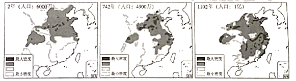

2020年北京市中考历史试题 · 选择题 第6、7、8、9、10题
6．如图材料共同说明了唐朝（ ）
A．兴盛的原因B．农业的发展C．衰落的过程D．割据的结果
7．唐朝时期，东亚国家与中国在语言文字、思想意识、社会组织、物质文明等方面联成一体，形成一个以中国为文化源的中华文化圈。以下促成这一文化圈形成的有（ ）
①日本遣唐使来华
②鉴真东渡
③新罗学习唐朝政治制度
④郑和下西洋
A．①②③B．①②④C．①③④D．②③④
8．如图《中国古代局部人口密度变化图》能反映出（ ）

A．中外文化交流B．经济重心南移
C．疆域面积扩大D．君主专制强化
9．一位同学要按照北京城的历史沿革参观以下地点，顺序应为（ ）
①元大都城墙遗址
②明城墙遗址
③金中都水关遗址
A．①②③B．①③②C．②①③D．③①②
10．以下史实的历史作用的共同点是（ ）
郑成功收复台湾 | 清朝在台湾建制 |
明末荷兰殖民者侵占台湾。清初在东 南沿海抗清的郑成功打败荷兰侵略者， 收复台湾 | 郑成功后代割据台湾。清政府打败郑 氏军队，台湾归入清朝版图，设置台湾 府，隶属福建省 |
A．维护了祖国领土完整
B．加强了对西北地区的管辖
C．推行了闭关锁国政策
D．实现了清朝对全国的统治